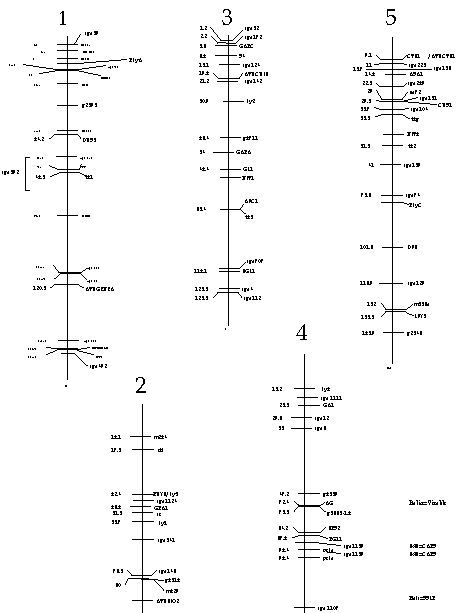
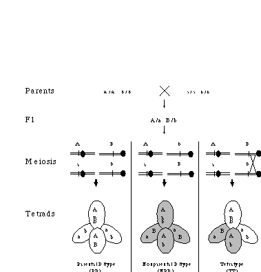

|
Cold Spring Harbor Arabidopsis Molecular Genetics Course July 1996
Dr. Daphne Preuss
1. OVERVIEW
Experiment : Genetic mapping of Arabidopsis centromeres
using SSLP and CAPS markers.
Schedule: July 3: Set up PCR reactions and run gels
July 4: Finish collecting data and analyze the results 2. INTRODUCTION The goal of this lab is to map the 5 Arabidopsis centromeres using SSLP (simple sequence length polymorphism) and CAPS (cleaved amplified polymorphic sequences) markers as outlined by Bell and Ecker (1994) and by Konieczny and Ausubel (1993). Several other PCR-based markers have been defined for the Arabidopsis genome, and their properties are summarized below. Along with more traditional RFLPs, these markers make up a dense genetic map consisting of over 400 loci, and several such markers are depicted in Figure 1 (see below). Most polymorphic loci in Arabidopsis have been identified by comparing the Landsberg and Columbia ecotypes (which differ by approximately 1% at the DNA sequence level). Many of these markers are useful for crosses to other ecotypes as well, and for the SSLPs, each Arabidopsis ecotype often contains a unique allele.
The least expensive way to map mutations in Arabidopsis is to
take advantage of the dense map of visible markers. The chief
differences between mapping with visible markers and mapping DNA
polymorphisms are :
1) Many crosses are required when mapping visible markers, while
a single cross to another ecotype introduces a nearly unlimited
supply of DNA polymorphic markers. 2) Many F1 lines need to be maintained when analyzing visible markers, while only a single F1 is required for mapping DNA polymorphisms.  Figure 1: Units correspond to the June, 1995, Lister and Dean RI map. 3) Some visible mutations can interact genetically with the mutation you would like to map, making double mutants difficult to construct. This appears less problematic when crossing two ecotypes, although some mutant phenotypes become more or less extreme in different backgrounds.
3. BACKGROUND
DNA markers facilitate genome analysis. Historically genetic
mapping utilized visible markers, but it is difficult to examine
many such markers in a single cross. The recognition that distantly
related individuals differ in DNA sequence throughout their genome
(Botstein et al., 1980) led to the rapid incorporation of DNA
markers into mapping strategies. Useful DNA markers have the
following characteristics: 1) They are inherited in a Mendelian fashion. 2) They are present in most individuals analyzed and recognize a sequence that is polymorphic. 3) They correspond to a single site in the genome. 4) The probe used to recognize the marker hybridizes selectively and efficiently, even under conditions of low stringency.
5) They can be distributed throughout the scientific community,
either as clones or as DNA sequences. Until recently, the most commonly used DNA markers were restriction fragment length polymorphisms (RFLPs), anonymous single copy-number genomic clones that reveal a polymorphism in the length of a restriction fragment, typically by DNA blot hybridization. In the case of genome analysis in plants, genetic maps consisting primarily of RFLP markers have been constructed for maize (Helentjaris, 1987; Burr and Burr, 1991), barley (Tragoonrung et al., 1992), wheat (Kam-Morgan and Gill, 1989), rice (McCouch et al., 1988), tomato (Bernatsky and Tanksley, 1986), lettuce (Landry et al., 1987), Brassica oleraceae (Slocum et al., 1990) and Arabidopsis thaliana (Chang et al., 1988; Nam et al., 1989). RFLP mapping is well-suited for determining the genetic location of any newly-cloned DNA sequence; the DNA fragment can be used as a hybridization probe (assuming it detects an RFLP) against the DNA filters used to construct the RFLP map. However, in many cases, new genes are identified by mutations, and mapping such a mutation onto an RFLP map can be a lengthy and arduous procedure. The typical method in Arabidopsis is to first map the mutation to a chromosome by crossing to a mapping line that carries multiple morphological markers. This involves a cross to form an F1, followed by selfing to generate F2 plants. Subsequently RFLP markers are used to determine a more precise map position. For each plant that is scored for RFLP markers, DNA has to be isolated and DNA blot analysis performed, using each of the RFLP markers as a hybridization probe. The resolution and applicability of RFLP maps is limited by the large quantity of purified DNA required to perform blot analysis, which, in turn, limits the number of F2 progeny that can practically be scored. Because Arabidopsis is small, it is not possible to isolate sufficient DNA from a single plant for analysis with several RFLP probes, necessitating the pooling of F3 individuals.
Recently, techniques based on the polymerase chain reaction (PCR)
(Mullis and Faloona, 1987) have been used to reveal polymorphisms
(Cox and Lehrach, 1991; Rafalski and Tingey, 1993). PCR-generated
markers can be scored using a small sample of DNA without the
use of radioactivity and without the time-consuming DNA blotting
procedure. In the sections immediately following, four types
of PCR-based markers are described, which are referred to by the
acronyms RAPDs, AFLPs, SSLPs, and CAPS.
RAPDs. One widely used PCR-based approach involves the
use of single, short PCR primers of arbitrary sequence (called
RAPD primers for random amplified polymorphic DNA; Williams et
al., 1990; Reiter et al., 1992). A major advantage of RAPDs is
that they provide large numbers of markers. However, a chief
limitation of the RAPD method is that it usually cannot distinguish
heterozygotes from their homozygous siblings (Williams et al.,
1990). In a given strain, amplification with a RAPD primer typically
results in the synthesis of a DNA fragment, while in another strain,
the same primer fails to amplify a similar fragment. Thus, RAPD
markers are dominant markers, and, as such, they do not allow
heterozygotes to be scored (see Botstein et al., 1980). In addition,
because RAPD primers typically have low melting temperatures,
the amplification of a specific sequence or sequences using such
a primer is highly sensitive to PCR conditions, including template
concentration and annealing temperature. It is thus often difficult
to correlate results obtained by different research groups (Devos
and Gale, 1992). Finally, RAPD primers frequently amplify more
than one sequence, resulting in multiple bands, and complicating
analysis of the results (Riedy et al., 1992).
AFLPs. The acronym AFLPs, for amplified fragment length
polymorphisms, refers to the patented technology of KeyGene Corporation.
In this method, DNAs from two polymorphic strains are cleaved
with one or two restriction endonucleases and adapters are ligated
to the ends of the cleaved fragments. The fragments are then
amplified using primers that are homologous to the adapter(s)
which contain a short stretch of random nucleotides at the 3'
end. These random nucleotides limit the number of amplified fragments
and reveal polymorphisms between the two strains which are detected
by displaying the amplified products on an acrylamide sequencing
gel. The major advantage of this method is that large numbers
of AFLPs can be detected in a single lane in a sequencing gel.
The major disadvantages of the method are that acrylamide gels
have to be used and many fragments are amplified in each lane,
resulting in a complicated pattern. Like RAPDs, AFLPs typically
are dominant markers, which makes it difficult to distinguish
heterozygotes from homozygotes.
SSLPs. Another class of PCR markers is based on amplification
across tandem repeats of one or a few nucleotides known as "microsatellites".
Microsatellites occur frequently and randomly in most eukaryotic
genomes and display a high degree of polymorphism due to variations
in the number of repeat units. These polymorphisms are called
simple sequence length polymorphisms or SSLPs and are now being
widely used in the human and mouse genome projects (Cornall et
al., 1991; Hearne et al., 1992; Love et al., 1990; Weber et al.,
1989). In the case of plants, Bell and Ecker (1994) demonstrated
by amplification of DNA from six common ecotypes that the microsatellites
in Arabidopsis are highly polymorphic. They also estimated that
(GA)n and (CA)n repeats are relatively abundant in Arabidopsis,
although much less so than in mammalian genomes with, on average,
one repeat every 40 and 120 kb, respectively. Using the set of
recombinant inbred lines developed by Lister and Dean (1993),
all thirty markers were assigned unequivocally to a chromosome
and linkage for each was established to neighboring markers at
greater than LOD 3.0 (Bell and Ecker, 1994). These results indicate
that randomly selected microsatellites are likely to be informative
in any given mapping population, and will be especially useful
for studying the evolutionary relationships between the many ecotypes
of Arabidopsis. CAPS. CAPS markers (cleaved amplified polymorphic sequences) are PCR-based markers that use primers to amplify DNA fragments, and those fragments are subsequently digested with a restriction endonuclease to display an RFLP (Tragoonrung et al., 1992; Weining and Langridge, 1991; Williams et al., 1991).
To demonstrate the feasibility of mapping with the CAPS method
in Arabidopsis, Konieczny and Ausubel (1993) synthesized 18 sets
of CAPS primers, each of which amplifies a single mapped DNA sequence
from the Columbia and Landsberg erecta ecotypes. Digestion of
the PCR products with a restriction endonuclease generates ecotype-specific
patterns. Using these CAPS markers an Arabidopsis gene can be
unambiguously mapped to one of the ten Arabidopsis chromosome
arms in a single cross using a limited number of F2 progeny.
However, because only a limited number of CAPS markers is currently
available, subsequent analysis using DNA blot hybridization and
the previously identified RFLP markers is needed to determine
a map position with accuracy high enough to allow a chromosome
walk, or to distinguish between related genes on the same chromosome
arm. Moreover, the usefulness of these initial CAPS markers is
limited by the fact that several different restriction endonucleases
are required to display the polymorphisms, and some of these are
expensive or are prone to give only partial digestions.
A large collection of CAPS markers that detect polymorphic AluI
sites is currently being generated (Preuss, Ausubel and Davis,
unpublished results). In addition, many labs have identified CAPS
markers through routine analysis of genes of interest. A current
listing of all available CAPS markers is available through AAtDB
(Cherry, et al., 1992).
CENTROMERE MAPPING USING TETRAD ANALYSIS: Centromeres
play an essential and fundamental role in the segregation of chromosomes
through mitosis and meiosis, yet the DNA elements required for
proper centromere function have been defined genetically only
in lower eukaryotes. Tetrad analysis, which requires genetic
characterization of all four products of individual meioses, makes
it possible to map centromeres (see Figure 2), but this technique
is not possible in many eukaryotic systems because their meiotic
products are dissociated. The Arabidopsis quartet mutation
causes the four products of pollen mother cell meiosis to remain
attached and makes it possible to perform tetrad analysis in this
multicellular eukaryote (Preuss et al. 1994). When a pollen tetrad
is placed on the stigma, it can result in the formation of four
seeds, and the plants formed from these seeds can be analyzed
genetically. To measure the genetic distance between a marker and a centromere with unordered tetrads (such as those formed in Arabidopsis) two markers are scored simultaneously (Figure 2). Within each tetrad, these markers segregate in a parental (nonrecombinant) or nonparental (recombinant) configuration. A tetrad with only nonrecombinant members is referred to as a parental ditype (PD); one with only recombinant members as a nonparental ditype (NPD); and a tetrad with two recombinant and two nonrecombinant members as a tetratype (TT) (Perkins 1953). During meiosis, the homologous chromosomes become oriented on the metaphase plate in either a parental or recombinant configuration (Figure 2). This results in equivalent numbers of NPD and PD tetrads. Tetratype tetrads arise only when a crossover has occurred between a marker in question and its centromere. Thus, to identify genes that are closely linked to the centromere, markers on two chromosomes are examined in a pair-wise fashion until the TT frequency approaches zero. The genetic distance (in centimorgans, cM) between the markers and their respective centromeres is defined by the function [(1/2)TT]/100 (Mortimer and Schild 1981). Figure 2: Centromere mapping with unordered tetrads:Tetratypes (TT) result only from a crossover between a marker and the centromere. 
Arabidopsis centromeres: Although plant centromeres can
be visualized easily in condensed chromosomes, they have not been
characterized as extensively as centromeres from yeast or mammals.
Genetic characterization has relied on segregation analysis of
chromosome fragments, and in particular on analysis of trisomic
strains that carry a genetically marked, teleocentric fragment
(for example, see Koornneef 1983). In addition, repetitive elements
have been identified that are either genetically (Richards et
al. 1991) or physically (Alfenito and Birchler 1993; Maluszynska
and Heslop-Harrison 1991) linked to a centromere. In no case,
however, has the functional significance of these sequences been
tested.
In trisomic Arabidopsis thaliana strains, the segregation
of chromosome fragments (Koornneef 1983) or whole chromosomes
(Sears and Lee-Chen 1970) has been used to map four of the centromeres
to within 5, 12, 17, and 38 cM, respectively. These positions
have not been refined by more recent studies because the method
is limited, not only by the difficulty in obtaining viable trisomic
strains, but also by the inaccuracy of comparing recombination
frequencies in chromosome fragments to those in intact chromosomes
(Koornneef 1983). These factors introduce significant error into
the calculated position of the centromere, and in Arabidopsis,
where 1 cM corresponds roughly to 200 kb (Koornneef 1987; Hwang
et al. 1991), none of the centromeres is mapped with sufficient
precision to make chromosome walking strategies practical. A 180 bp repetitive element, pAL1, that comprises 1% of the Arabidopsis genome has been shown by in situ hybridization to be localized near each of its five centromeres (Maluszynska and Heslop-Harrison 1991). Although a functional role for pAL1 has been proposed, more recent studies have failed to detect this sequence near the centromeres in species closely related to Arabidopsis thaliana (Maluszynska and Heslop-Harrison 1993). These results are particularly troubling because one of the species tested, A. pumila, is thought be an amphidiploid, derived from a cross between A. thaliana and another close relative (Maluszynska and Heslop-Harrison 1991; Price et al. 1995). Another repetitive sequence, pAtT12, has been genetically mapped to within 5 cM of the centromere on chromosome 1 and to the central region of chromosome 5 (Richards et al. 1991), although its presence on other chromosomes has not been established. Like pAL1, a role for pAtT12 in centromere function remains to be demonstrated.
4. PROCEDURE: PREPARATION OF DNA FROM FROZEN PLANT TISSUE
You will be given DNA samples prepared by the following method:
1. Collect 4 to 6 day-old seedlings (about 1-3 cm tall) or any
other small amount of tissue (small, unexpanded leaves work best),
and freeze at -20°C or -80°C.
2. Grind the frozen tissue in a microfuge tube using a disposable
pestle and a drill, continuing until all of the solid material
is completely homogenized. Add 0.5 ml ice-cold STES and grind
again (if necessary). STES: 15% sucrose 50 mM Tris pH 8.0 50 mM Na2EDTA
250 mM NaCl
3. If solid debris remains, pipet liquid to a new tube (store
on ice).
4. Pellet nuclei at 4°C (5 min, 1/2 max speed in a microfuge).
Remove supernatant with a pipet (pellet is soft!!). Suspend
crude nuclear pellet fraction in 0.3 ml 20:10 TE, by gently tapping
the bottom of the tube. 20:10 TE: 20 mM Tris, pH 8.0
10 mM Na2EDTA
5. Add 20 µl of 20% SDS to lyse the nuclei.
6. Heat at 70°C for 15 minutes.
7. Add 150 µl of 7.5 M ammonium acetate and mix. Cool on ice
for at least 30 minutes.
8. Centrifuge at full speed, 5 minutes 4°C. Transfer the
supernatant to a new tube, leaving ALL the precipitate (sludge)
behind!
9. Add 0.7 ml isopropanol at room temperature to the supernatant.
Let stand for 15 minutes. Spin at room temperature for 5 minutes.
If the pellet looks green, suspend it in 470 µl TE (10mM Tris,
pH8.0, 1 mM Na2EDTA), and repeat the isopropanol precipitation
(adding 0.7 ml isopropanol).
10. Decant the supernatant, wash pellet with 1 ml 75% ethanol
(cold). Microfuge if the pellet is loose. Wash the pellet with
1 ml 100% ethanol (at room temperature), remove excess ethanol
from the pellet by blotting on a paper towel, and dry pellet.
Resuspend in 100 ul TE.
-> Yield ranges from 5 - 15 µg per seedling (or 0.1 mg per
ml). Be sure to thoroughly clean the pestle (bleach, ethanol,
then water) between each sample.
5. PROCEDURE: PCR REACTIONS
You will be supplied with PCR primers for SSLP and CAPS markers
and with DNA from Landsberg, Columbia, and tetrads segregating
for Landsberg and Columbia markers. Using each DNA prep and the
primers distributed by the TA, perform PCR reactions. Each group
of students will be using different sets of primers, and thus
will score the segregation of different genetic markers.
1. Mix the following: (Volumes are calculated per sample) 1 µl forward primer (~20 uM stock) 1 µl reverse primer 5 µl 10 X dNTPs (Stock is 2mM; final concentration is 0.2 mM) 5 µl 10 X polymerase buffer (final concentration is 10 mM KCl, 20 mM Tris - pH 8.8; 10 mM (NH4)2SO4, 2 mM MgSO4, 0.1 % Triton X-100)
37 µl water
2. Aliquot 49 µl into each 0.5 ml PCR tube (available in strips
of 8 tubes from Robbins Scientific).
3. Add 1 µl DNA to each tube. Save on ice until the PCR machine
is available.
4. Just before initiating the PCR run, add 1 ul of Taq Polymerase
to each tube and close tubes with strips of 8 caps. 5. Start PCR program: 1X: 5 min @ 95°C 50X: 30 sec @ 95° 30 sec @ 55° 1 min @ 72° 1X: 5 min @ 72°
store overnight @ -20°C
-> Run PCR reactions overnight and store products at 4°C.
6. PROCEDURE: GEL ELECTROPHORESIS
Load either a 4% agarose minigel or a 14% acrylamide gel with
20 µl of each PCR reaction. Be sure to load the Landsberg and
Columbia controls. A standard (lambda DNA, BstEII digest) will be
provided. Solutions: 50 X stock of TAE: 242 g Tris Base 57.1 ml glacial acetic acid 100 ml 0.5M EDTA (pH 8.0)
add water to 1 liter. 6 X stock of DNA gel loading buffer: 0.25% bromophenol blue 0.25% xylene cyanol FF
30% glycerol 10 mg/ml stock of ethidium bromide
(Use 5 µl/100 ml of gel or buffer). 40%acrylamide:bis acrylamide (29:1)
7. REFERENCES Alfenito MR, and Birchler JA (1993) Molecular characterization of a maize B chromosome centric sequence. Genetics 135:589-597. Bell, C.J. and Ecker, J.R. (1994) Assignment of thirty microsatellite loci to the linkage map of Arabidopsis. Genomics, 19, 137-144. Bernatsky, R. and Tanksley, S.D. (1986) Toward a saturated linkage map in tomato based on isozymes and random cDNA sequences. Genetics, 112, 887-898. Botstein, D., White, R.L., Skolnick, M., and Davis, R.W. (1980) Construction of a genetic linkage map in man using restriction fragment length polymorphisms. Am. J. Hum. Genet. 32, 314-331. Burr, B and Burr, F.A. (1991) Recombinant inbreds for molecular mapping in maize: theoretical and practical considerations. Trends Genet. 7, 55-60. Chang, C., Bowman, J.L., DeJohn, A.W., Lander, E.S. and Meyerowitz, E.M. (1988) Restriction fragment length polymorphism linkage map for Arabidopsis thaliana. Proc. Natl. Acad. Sci. USA, 85, 6856-6860. Cherry, J.M., Cartinhour, S.W. and Goodman, H.M. (1992) AAtDB, An Arabidopsis thaliana Database. Plant Mol. Biol. Rep. 10, 308. Cornall, R.J., Aitman, T.J., Hearne, C.M., and Todd, J.A. (1991). The generation of a library of PCR-analyzed microsatellite variants for genetic mapping of the mouse genome. Genomics 10, 874-881. Cox, R.L. and Lehrach, H. (1991). Genome mapping: PCR based meiotic and somatic cell hybrid analysis. BioEssays 13, 193-198. Devos, K.M. and Gale, M.D. (1992). The use of random amplified polymorphic DNA markers in wheat. Theor. Appl. Genet. 84, 567-572. Hearne, C.M. Ghosh, S. and Todd, J.A. (1992). Microsatellites for linkage analysis of genetic traits. Trends Genet. 8, 288-294. Helentjaris, H. (1987). A genetic linkage map for maize based on RFLPs. Trends Genet. 3, 217-221. Hwang I, Kohchi T, Hauge BM, Goodman HM, Schmidt R, Cnops G, Dean C, Gibson S, Iba K, Lemieux B, Arondel V, Danhoff L, Somerville C (1991) Identification and map position of YAC clones comprising one-third of the Arabidopsis genome. The Plant Journal 1: 367-374. Kam-Morgan, L.M.W. and Gill, B.S. (1989). DNA restriction fragment length polymorphism: a strategy for genetic mapping of D genome of wheat. Genome 32, 724-732. Konieczny, A. and Ausubel, F. (1993). A procedure for mapping Arabidopsis mutations using co-dominant ecotype-specific PCR-based markers. The Plant Journal 4, 403-410. Koornneef M (1983) The use of telotrisomics for centromer mapping in Arabidopsis thaliana (L.) Heynh. Genetica 62: 33-40. Koornneef M (1987) Linkage map of Arabidopsis thaliana (2n=10). In SJ O'Brien, ed, Genetic Maps 1987: A compilation of linkage and restriction maps of genetically studied organisms. Cold Spring Harbor Laboratory Press, Cold Spring Harbor, New York, pp 724-745. Landry, B.S., Kessel, R., Farrara, B. and Michelmore, R.W. (1987). A genetic map of lettuce with restriction fragment length polymorphism, isozyme, disease resistance and morphological markers. Genetics 116, 331-337. Lister, C. and Dean, C. (1993). Recombinant inbred lines for mapping RFLP and phenotypic markers in Arabidopsis thaliana. The Plant Journal 4, 745-750. Love, J.M., Knight, A.M., McAleer, M.A., Todd, J.A. (1990) Towards construction of a high resolution map of the mouse genome using PCR analysed microsatellites. Nucl. Acids Res. 18, 4123-4130. Maluszynska J and Heslop-Harrison JS (1991) Localization of tandemly repeated DNA sequences in Arabidopsis thaliana. Plant Journal 1:159- 166. Maluszynska J and Heslop-Harrison JS (1993) Molecular cytogenetics of the genus Arabidopsis: In situ localization of rDNA sites, chromosome numbers and diversity in centromeric heterochromatin. Annals Botany 71:479-484. McCouch, S.R., Krochert, G., Yu, Z.H., Wang, Z.Y., Kush, G.S., Coffman, W.R. and Tanksley, S.D. (1988). Molecular mapping of rice chromosomes. Theor. Appl. Genet. 76, 815-829. Mortimer RK and Schild D (1981) Genetic mapping in Saccharomyces cerevisiae. In The Molecular Biology of the Yeast Saccharomyces. Life Cycle and Inheritance. J.N. Strathern, E.W. Jones, and J.R. Broach, eds., Cold Spring Harbor Laboratory, NY pp. 11-26. Mullis, K.B. and Faloona, F. (1987). Specific synthesis of DNA in vitro via a polymerase chain reaction. Methods Enzymol. 155, 355-350. Nam, H-G., Giraudat, J., den Boer, B., Moonan, F., Loos, W.D.B., Hauge, B.M. and Goodman, H.M. (1989). Restriction fragment length polymorphism linkage map of Arabidopsis thaliana . Plant Cell 1, 699- 705. Perkins DD (1953) The detection of linkage in tetrad analysis. Genetics 38, 187-197. Preuss D, Rhee SY, Davis RW (1994) Tetrad Analysis Possible in Arabidopsis with Mutation of the QUARTET (QRT) genes. Science 264: 1458. Price RA, Al-Shehbaz IA, Palmer JD (1995) Systematic relationships of Arabidopsis: a molecular and morphological perspective. In Somerville, C. and Meyerowitz, E. eds., Arabidopsis, Cold Spring Harbor Press, NY, in press. Rafalski, J.A. and Tingey, S.V. (1993) Genetic diagnostics in plant breeding: RAPDS, mcirosatellites and machines. TIGS 9, 275-280. Reiter, R.S., Williams, J.G.K., Feldman, K.A., Rafalski, J.A., Tingey, S.V. and Scolnik, P.A. (1992). Global and local genome mapping in Arabidopsis thaliana by using recombinant inbred lines and random amplified polymorphic DNAs. Proc. Natl. Acad. Sci. USA. 89, 1477-1481. Richards EJ, Goodman HM, and Ausubel FM (1991) The centromere region of Arabidopsis thaliana chromosome 1 contains telomere-similar sequences. Nucleic Acids Research 19:3351-3357. Riedy, M.F., Hamilton III, W.J. and Aquadro, C.F. (1992). Excess of non- parental bands in offspring from known primate pedigrees assayed using RAPD PCR. Nucl. Acids Res. 20, 918. Sears LMS and Lee-Chen S (1970) Cytogenetic studies in Arabidopsis t haliana. Can. J. Genet. Cytol. 12:217-233. Slocum, M.K., Figdore, S.S., Kennard, W.C., Suzuki, Y.K. and Osborn, T.C. (1990). Linkage arrangement of restriction fragment length polymorphism loci in Brassica oleracea. Theor. Appl. Genet. 80, 57-64. Tragoonrung, S., Kanizin, V., Hayes, P.M. and Blake, T.K. (1992). Sequence- tagged-site-facilitated PCR for barley genome mapping. Theor. Appl. Genet. 84, 1002-1008. Weber, J.L. and May, P.E. (1989). Abundant class of human DNA polymorphisms which can be typed using PCR. Am. J. Hum. Genet. 44, 388-396. Weining, S. and Langridge, P. (1991). Identification and mapping of polymorphisms in cereal based on the polymerase chain reaction. Theor. Appl. Genet. 82, 209-216. Williams, M.N.V., Pande, N., Nair, M., Mohan, M and Bennet, J. (1991). Restriction fragment length polymorphism analysis of polymerase chain reaction products amplified from mapped loci of rice (Oryza sativa L.) genomic DNA. Theoret. Appl. Genet. 82, 489-498.
Williams, J.G.K, Kubelik, A.R., Livak, K.J., Rafalski, J.A. and
Tingey, S.V. (1990). DNA polymorphisms amplified by arbitrary
primers are useful as genetic markers. Nucleic Acids Res. 18,
6531-6535.
|